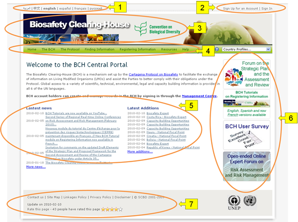

URL: http://bch.cbd.int/
La Página de inicio del Portal Central del CIISB es una página de Bienvenida que proporciona un acceso de entrada a cada elemento del CIISB y a toda la información almacenada en el Portal Central, así como en los nodos internacionales, regionales y nacionales vinculados al CIISB.
La página Bienvenido al Portal Central del CIISB tiene un área de bienvenida la cual introduce brevemente al CIISB, proporciona un enlace rápido al Centro de Gestión y proporciona información acerca de los asuntos más destacados tales como las noticias de última hora relacionadas al Portal Central del CIISB y las adiciones más recientes a las bases de datos.
Los siete componentes de la página Bienvenido al Portal Central del CIISB son:
-
Enlaces al CIISB en los seis idiomas oficiales de la Organización de las Naciones Unidas (ONU), ubicados en la esquina superior izquierda, de la página de inicio.
-
Un enlace Iniciar sesión para que usuarios registrados (accedan al centro de gestión), y un enlace Registrarse para solicitar cuenta, ambos localizados en la esquina superior derecha.
-
Debajo de estos enlaces se encuentra el título del Centro de Intercambio de Información sobre Seguridad de la Biotecnología y el enlace de la página web del Convenio de Diversidad Biológica.
-
Una barra de navegación atraviesa la página de inicio debajo del título. La misma proporciona enlaces a los principales componentes del Portal Central.
-
Debajo de la barra de navegación, se encuentra un área de bienvenida, la cual contiene las Noticias de última hora y las Últimas adiciones.
-
A la derecha del área de bienvenida se encuentran Accesos directos a secciones populares o agregadas recientemente.
-
Debajo del área de bienvenida se encuentran los enlaces para que los usuarios contacten a la Secretaría del Convenio sobre Diversidad Biológica (SCDB), accedan al mapa del sitio, analicen las políticas de privacidad, y de declaración de derechos de autor. Bajo estos enlaces se encuentra la fecha de la última actualización de la página de inicio y un enlace que permite a los usuarios evaluar esta página.

Figura 1